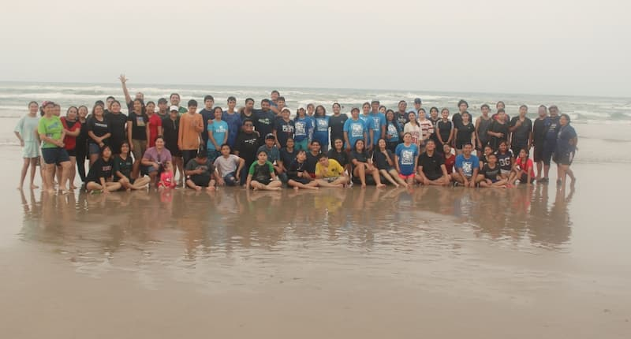
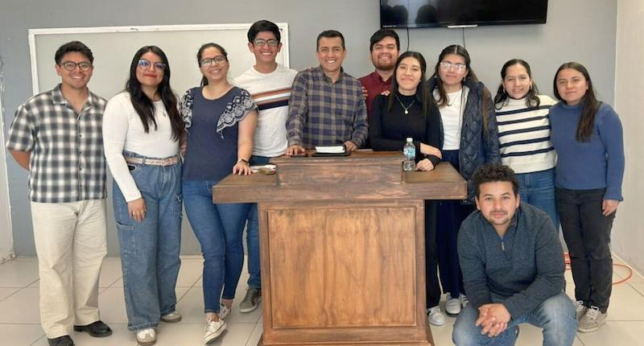

Cerrando una etapa, comenzando una nueva aventura.
Compartimos cómo culminamos nuestra formación en el Instituto Bíblico, nuestro último viaje de UME en Tamaulipas
Leer másCreemos que la fe es una aventura que se vive mejor en compañía. Te invitamos a caminar con nosotros mientras exploramos lo que el Señor nos va enseñando.
Somos Ernesto y Diana, una pareja apasionada por vivir aventuras y servir al Señor. Nos casamos en 2021 y desde entonces hemos estado viviendo esta aventura. Actualmente, estamos en el Instituto Bíblico de Palabra de Vida en México, una experiencia que nos ha desafiado y transformado. Nos encanta compartir nuestra fe, una forma es a través de nuestro compartir, servir a las personas y a la niñez en diferentes proyectos, mientras caminamos juntos hacia lo que Dios tiene preparado.
Desde pequeño, mi vida religiosa parecía un camino recto. Pero en 2008, entendí que no se trataba de ser perfecto, sino de ser salvo. Fue un giro de 180 grados que me hizo comprender mi condición de pecador y el regalo de la cruz. El camino ha sido una aventura, llena de aprendizaje y crecimiento.
Descubre másA los 8 años, entendí que Jesús era el único camino al cielo. Años después, me di cuenta de que buscaba mi propia gloria y decidí poner a Cristo en primer lugar. Fue como empezar de nuevo, con más fuerza y propósito. Cada paso ha reafirmado que esta es la decisión más importante de mi vida.
Descubre más¿Quieres ser parte de nuestra aventura?
Te compartimos los últimos pasos de nuestra aventura. Descubre lo que hemos estado haciendo durante nuestros estudios y servicio, y acompáñanos en oración.

Compartimos cómo culminamos nuestra formación en el Instituto Bíblico, nuestro último viaje de UME en Tamaulipas
Leer más
Te compartimos un vistazo personal a lo que vivimos en marzo y abril: formación, servicio en iglesias y cómo caminamos sostenidos
Leer más
Reflexiones sobre nuestra aventura en México, el aprendizaje y próximos pasos.
Leer másLa fe es una aventura en compañía. Te invitamos a unirte a la nuestra y ser parte de nuestra historia.
Camina con nosotros mes a mes, sosteniendo la misión desde donde estás. Tu acompañamiento constante nos permite servir de tiempo completo en El Salvador.
Caminar juntosEstamos preparando un nuevo proyecto. ¡Pronto tendremos más para compartir contigo!
Recursos que usamos y recomendamos para crecer espiritualmente, profundizar en la Palabra y servir mejor. Curaduría con cariño.
Recursos para encontrarte con Dios cada mañana. Lo que usamos nosotros y otras opciones que recomendamos.
Materiales para profundizar en la Palabra. Desde lecturas guiadas hasta recursos de contexto histórico.
Materiales de Word of Life en español para servir, enseñar y acompañar a niños y jóvenes.
Estamos aquí para escucharte. Ya sea para una oración, una pregunta o simplemente para saludar, estamos a un clic de distancia.